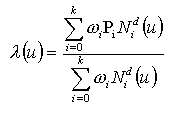

A B-spline curve is a piecewise parametric polynomial or rational curve described in terms of control points and basis functions. The B-spline curve has been selected as the most stable format to represent all types of polynomial or rational parametric curves. With appropriate attribute values it is capable of representing single span or spline curves of explicit polynomial, rational, Bezier or B-spline type.
Interpretation of the data is as follows:
-
All weights shall be positive and the curve is given by

k+1 = number of control points Pi = control points wi = weights d = degree The knot array is an array of (k+d+2) real numbers [u-d ... uk+1], such that for all indices j in [-d,k], uj <= uj+1. This array is obtained from the knot data list by repeating each multiple knot according to the multiplicity. N di, the ith normalized B-spline basis function of degree d, is defined on the subset [ui-d, ... , ui+1] of this array.
-
Let L denote the number of distinct values among the d+k+2 knots in the knot array; L will be referred to as the 'upper index on knots'. Let mj denote the multiplicity (number of repetitions) of the jth distinct knot. Then

All knot multiplicities except the first and the last shall be in the range 1 ... degree; the first and last may have a maximum value of degree + 1. In evaluating the basis functions, a knot u of e.g. multiplicity 3 is interpreted as a string u, u, u, in the knot array. The B-spline curve has 3 special subtypes (Note: only 1, Bezier curve, included in this IFC release) where the knots and knot multiplicities are derived to provide simple default capabilities.
- Logical flag is provided to indicate whether the curve self intersects or not.
 EXPRESS-G diagram
EXPRESS-G diagram Link to this page
Link to this page